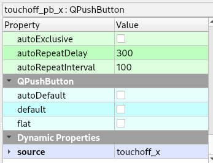
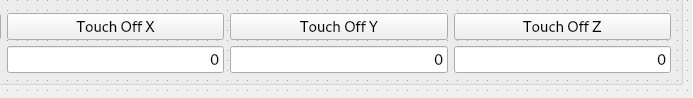

Coordinate Systems¶
Coordinate System Touchoff¶
To touch-off an axis, use a QPushButton and QLineEdit to set the touch-off value. Optionally you can have a QComboBox to select the Coordinate System to touch off to.
Control Function |
Object Type |
Object Name |
Touch Off Axis |
QPushButton |
touchoff_pb_(axis letter) |
Touch Off Value |
QLineEdit |
touchoff_le |
Coordinate System |
QComboBox |
touchoff_system_cb |
Optionally you can have a QLineEdit for any axis by adding a string type Dynamic Property named source to the QPushButton and the value contains the object name of the QLineEdit that you want to use. See Dynamic Properties
As you can see you can have a QLineEdit for each axis.
Change Coordinate System¶
To change the coordinate system via a button, use a change_cs_`n` QPushButton where n is 1-9 for G54 through G59.3
Control Function |
Object Type |
Object Name |
Change Coordinate System |
QPushButton |
change_cs_(n) |